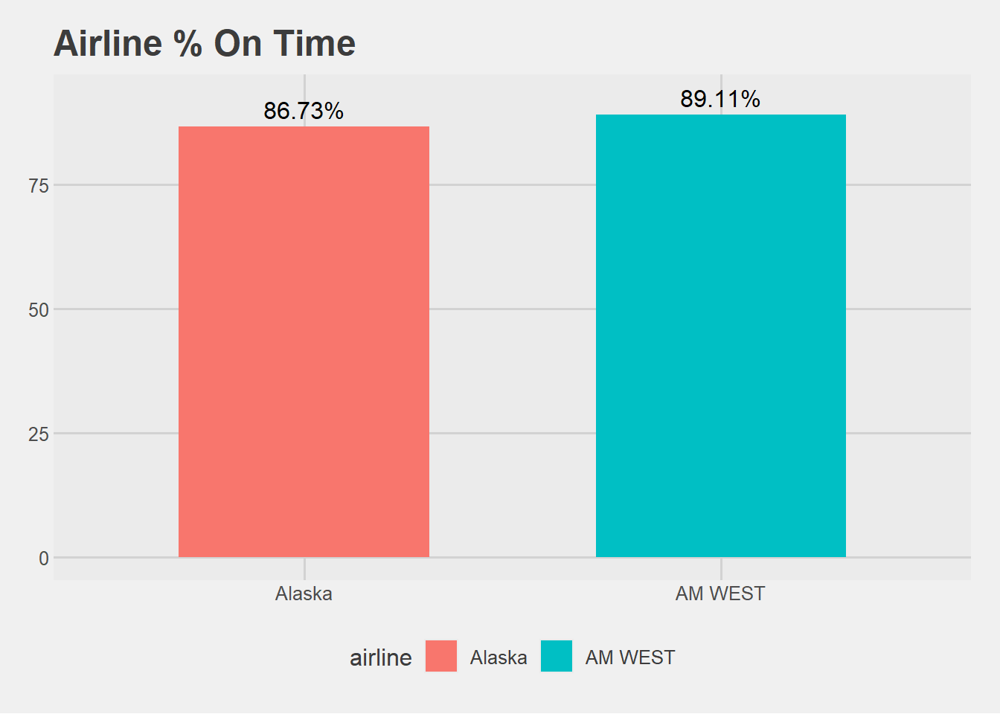
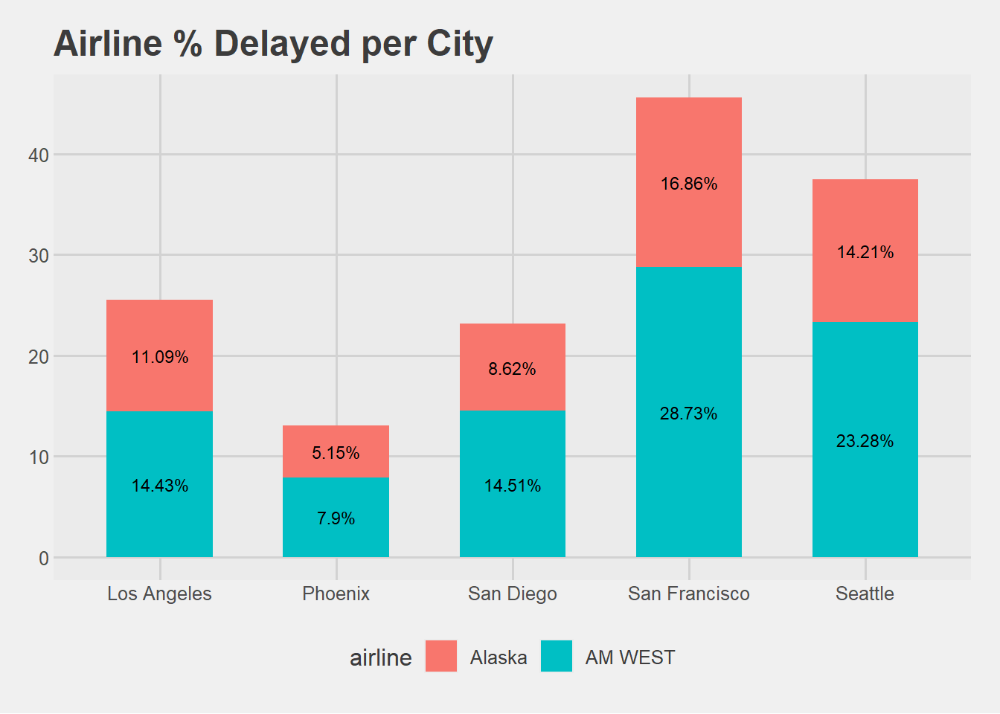
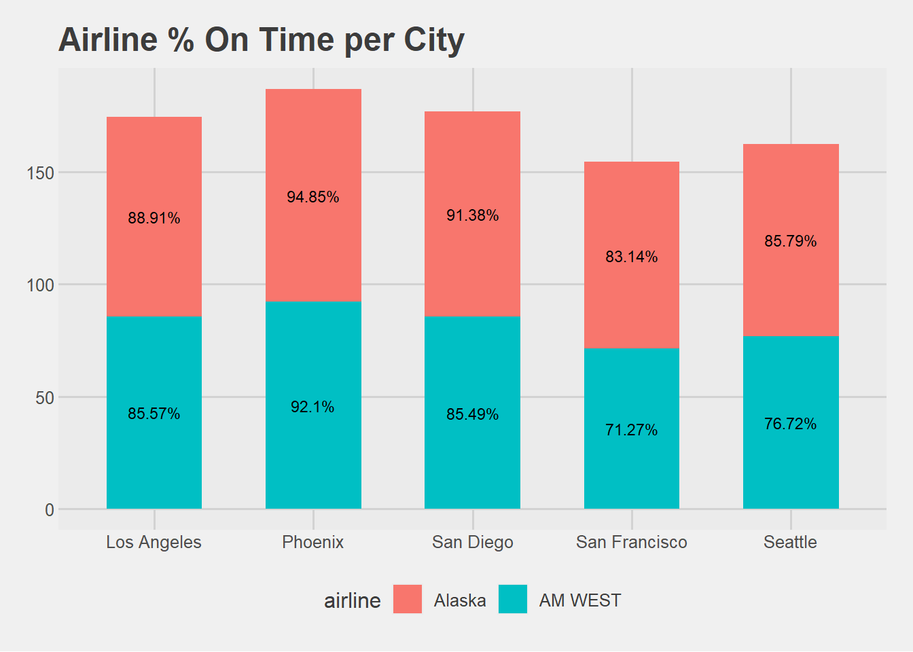

New names:
Rows: 5 Columns: 7
── Column specification
──────────────────────────────────────────────────────── Delimiter: "," chr
(2): ...1, ...2 dbl (3): Los Angeles, San Diego, San Francisco num (2):
Phoenix, Seattle
ℹ Use `spec()` to retrieve the full column specification for this data. ℹ
Specify the column types or set `show_col_types = FALSE` to quiet this message.
• `` -> `...1`
• `` -> `...2`
df
# A tibble: 5 × 7
...1 ...2 `Los Angeles` Phoenix `San Diego` `San Francisco` Seattle
<chr> <chr> <dbl> <dbl> <dbl> <dbl> <dbl>
1 Alaska on time 497 221 212 503 1841
2 <NA> delayed 62 12 20 102 305
3 <NA> <NA> NA NA NA NA NA
4 AM WEST on time 694 4840 383 320 201
5 <NA> delayed 117 415 65 129 61
weird table
Submitted data file with at least some count analysis (+45) Ok, so we can do a count of total flights, count of flights per location, counts of flights per airline.
Recreated File in Same Format as given, including missing data where there were empty cells in source data. (+5) I recreated the table in excel, formatted it into a csv with the empty fields. So we are ok on that.
Placed file in Internet-accessible location, such as a publicly-accessible GitHub repo. Also OK (if less scaleable) to generated and populated dataframe from code. (+5) I placed it into my folder and called it via cwd, so this should work fine.
Provided code to populate missing data. (+5) Populate missing data? Oh, maybe he wants us to do a Global Baseline Estimate for the missing row? Probably not. Maybe just to fill(x, .direction = "down") down the airline field.
Transformed data from wide to long format. (+10) Ok, so pivot_longer() to combine all the cities into one column called cities with their values to time. That way we have airline, flights, and times.
Compared percentage (not just counts) of either delays or arrival rates for two airlines overall. [Either with a chart, or a table; both would be exemplary]. Include text summarizes findings from this comparison. (+10)
We can get the total then divide the total by the sum of delayed * 100 to get the percentage. We can do a filter choosing either delay or arrival, get the total, get the percentage of delayed flights per airline using summarization().
Compared percentage (not just counts) of either delays or arrival rates for two airlines across five cities. [Either with a chart, or a table; both would be exemplary]. Include text summarizes findings from this comparison. (+10)
Same thing as the previous, we would just summarize by airline, city. However, it makes sense to widen flights.
Describe discrepancy between comparing two airlines’ flight performances city-by-city and overall. (+5)
`summarise()` has grouped output by 'airline'. You can override using the
`.groups` argument.
# A tibble: 10 × 3
# Groups: airline [2]
airline city total_flights
<chr> <chr> <dbl>
1 AM WEST Los Angeles 811
2 AM WEST Phoenix 5255
3 AM WEST San Diego 448
4 AM WEST San Francisco 449
5 AM WEST Seattle 262
6 Alaska Los Angeles 559
7 Alaska Phoenix 233
8 Alaska San Diego 232
9 Alaska San Francisco 605
10 Alaska Seattle 2146
# A tibble: 4 × 5
airline status flights total perc
<chr> <chr> <dbl> <dbl> <dbl>
1 AM WEST delayed 787 7225 10.9
2 AM WEST on time 6438 7225 89.1
3 Alaska delayed 501 3775 13.3
4 Alaska on time 3274 3775 86.7
df3 |>filter(status =="on time")|>ggplot(aes(airline, perc, fill = airline)) +geom_col(width =0.6) +geom_text(aes(label = glue::glue("{round(perc, 2)}%")), position =position_nudge(y =3.5)) +labs(title ="Airline % On Time",x ="Airline",y ="Percentage Total") +theme_fivethirtyeight()

df4 <- df2|>group_by(airline, status, city) |>summarize(flights =sum(flights, na.rm =TRUE), .groups ="drop") |>group_by(airline, city) |>mutate(total =sum(flights, na.rm =TRUE), perc =100* flights / total) |>ungroup()df5 <- df4 |>filter(status =="delayed") |>ggplot(aes(x = city, y = perc, fill = airline)) +geom_col(width =0.6) +geom_text(aes(label = glue::glue("{round(perc, 2)}%")), size =3, position =position_stack(vjust =0.5)) +labs(title ="Airline % Delayed per City",x ="Airline",y ="Percentage Total") +scale_color_fivethirtyeight() +theme_fivethirtyeight()df6 <- df4 |>filter(status =="on time") |>ggplot(aes(x = city, y = perc, fill = airline)) +geom_col(width =0.6) +geom_text(aes(label = glue::glue("{round(perc, 2)}%")), size =3, position =position_stack(vjust =0.5)) +labs(title ="Airline % On Time per City",x ="Airline",y ="Percentage Total") +scale_color_fivethirtyeight() +theme_fivethirtyeight()
df4 |>filter(status =="delayed")
# A tibble: 10 × 6
airline status city flights total perc
<chr> <chr> <chr> <dbl> <dbl> <dbl>
1 AM WEST delayed Los Angeles 117 811 14.4
2 AM WEST delayed Phoenix 415 5255 7.90
3 AM WEST delayed San Diego 65 448 14.5
4 AM WEST delayed San Francisco 129 449 28.7
5 AM WEST delayed Seattle 61 262 23.3
6 Alaska delayed Los Angeles 62 559 11.1
7 Alaska delayed Phoenix 12 233 5.15
8 Alaska delayed San Diego 20 232 8.62
9 Alaska delayed San Francisco 102 605 16.9
10 Alaska delayed Seattle 305 2146 14.2
df5

Above shows the ggplot for delays as a percentage of the total flights per airline per city. Overall, seems that AM WEST has higher % of their flights being delayed when compared to Alaska. especially in San Francisco and Seattle.
df4 |>filter(status =="on time")
# A tibble: 10 × 6
airline status city flights total perc
<chr> <chr> <chr> <dbl> <dbl> <dbl>
1 AM WEST on time Los Angeles 694 811 85.6
2 AM WEST on time Phoenix 4840 5255 92.1
3 AM WEST on time San Diego 383 448 85.5
4 AM WEST on time San Francisco 320 449 71.3
5 AM WEST on time Seattle 201 262 76.7
6 Alaska on time Los Angeles 497 559 88.9
7 Alaska on time Phoenix 221 233 94.8
8 Alaska on time San Diego 212 232 91.4
9 Alaska on time San Francisco 503 605 83.1
10 Alaska on time Seattle 1841 2146 85.8
df6

In the ggplot above, we are looking at on time flights as a percentage of the total flights per city. Similar to the above, we can see that Alaska has a higher % of their flights being on time when compared to AM West.
However, we should remember that AM WEST accounts for 65% of all total flights, with Alaska at 35%, so while Alaska performs better per city, AM WEST has a higher count of flights that are on time.